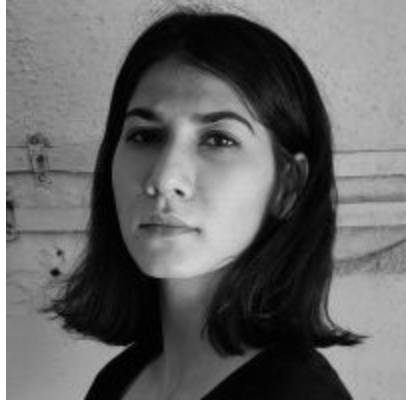

Jyoti Jangra
Visual storyteller · Journalist · Researcher
Showreel
Films and documentaries
Video stories
Photos
A little about me
Curiosity takes me places.

“My inspiration in life largely comes from understanding how the world functions.”
I’m a journalist storyteller, and also a traveler. I find inspiration in learning new things, having new experiences, exploring new places and meeting new people.
To me, journalism exists to help people make informed and conscious decisions for the greater good of society. A journalist must listen to people and tell their stories honestly—that is what can bring positive change.
At Newsreel Asia, I use visual storytelling to bring audiences closer to lives and experiences that might otherwise remain unseen.
Visit my Newsreel Asia profileContact
Have a story to tell?
For stories, collaborations and professional enquiries, get in touch by email.